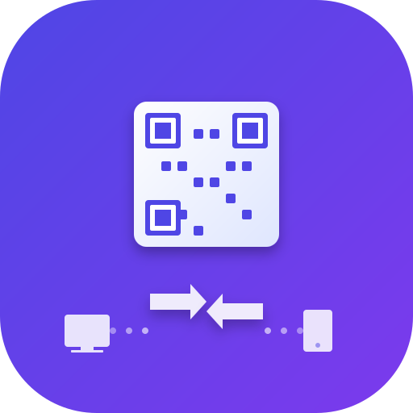

PortalDrop

PortalDrop es una herramienta de escritorio para Linux, construida con Python y Qt6 (PySide6), diseñada para facilitar transferencias de archivos universales entre un PC y dispositivos móviles (iOS/Android) sin requerir ninguna instalación en el teléfono.
Características Principales
- No requiere instalación móvil: Los usuarios simplemente escanean un código QR con el navegador de su teléfono para iniciar la transferencia de archivos.
- Arrastrar y Soltar (Drag and Drop): Arrastra fácilmente los archivos a la ventana de la aplicación para generar un enlace de descarga al instante.
- Bidireccional: Admite la transferencia de archivos del móvil al PC (a través de una opción "Recibir") y del PC al móvil.
- Privacidad Local: Las transferencias se realizan directamente a través de la red WiFi local (P2P local), lo que significa que los archivos nunca salen de tu red.
- Interfaz Moderna: Cuenta con un modo oscuro nativo y un diseño limpio.
Tecnologías Utilizadas
El proyecto utiliza las siguientes tecnologías:
- Backend: Servidor HTTP nativo de Python.
- Frontend: PySide6 (Qt6 para Python).
- Detección de Red: Sockets UDP para detectar la IP de la LAN.